《三国演义》· 火烧赤壁 · 赤壁之战资料
一、曹操阵营中的船
共四种船：
1.楼船，规模最高，曹操横槊赋诗专用。
船体庞大，高十余丈。一般在船上建楼三重，“列女 墙、战格、树幡帜，开驾窗矛穴，置抛车、垒石、铁斗，状如城垒。”一层曰庐，二层曰飞庐，三层曰雀室”。也有达到5-10层
的。孙权派将军董袭“督五楼船住濡须口”，即5层楼船。
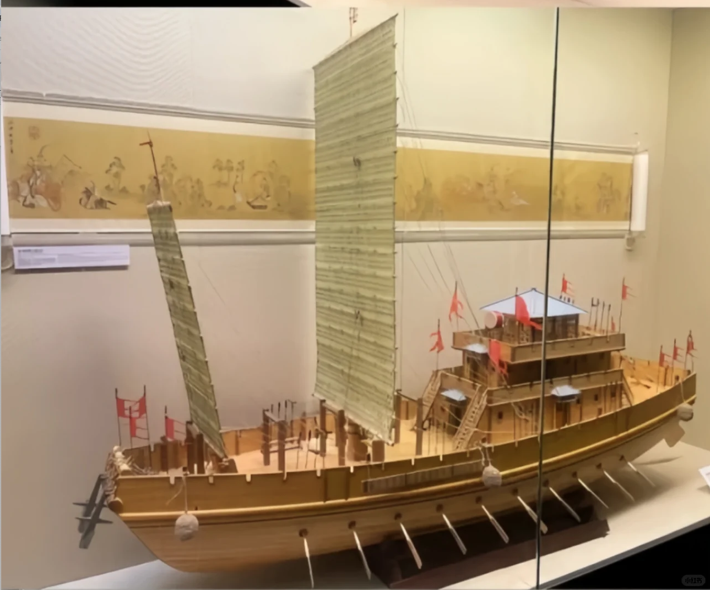
2.艨艟战舰，在外侧列为城郭
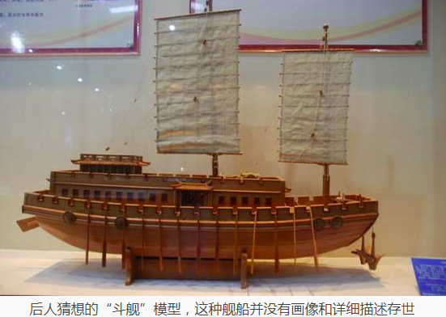
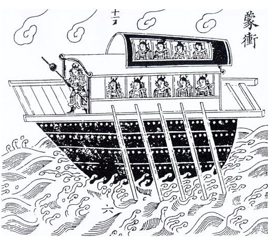
3.多桨战船，有大有小，后面铁索连舟连在一起
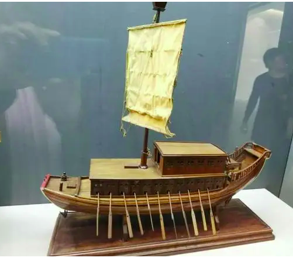
大战船（可以有帆）↑
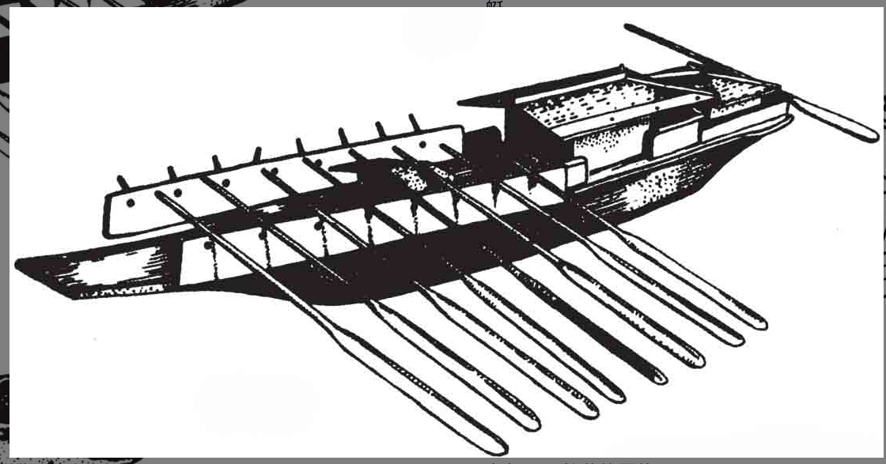
小战船（体现出区别，可以没有帆）↑
4.传递消息的小船，铁索连舟后就剩几十条小船，剧情中可不做展示
黄盖诈降时的火船可以用艨艟，系在船尾的走舸可以用第四种传递消息的小船
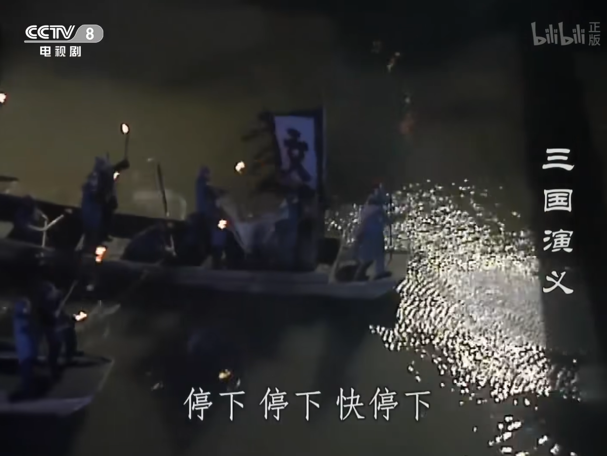
能坐5-10个人的小船，船尾系的走舸、文聘出来止住黄盖时乘的船，都可以用这个形制
【走舸】
能坐5-10人的小船，可以没有棚。黄盖船尾系的走舸、文聘出来时坐的船都是这个。
【小战船】
有棚，棚大约占整条船的1/3，剩下2/3用来铺板子。
一条船上，大约可以4*5，站20人左右。
【大战船】
形制同小战船，小战船和大战船的比例约为1:3-1:4。
【艨艟】
船身更窄，冲劲儿更大，船身也更大。
大战船和艨艟的比例约为1:2-1:3.
【曹操楼船】
曹操楼船和艨艟的比例约为1:1.5-1:2.
二、曹军水寨
1.铁索连舟前：
共24组，每两组相接的位置就只一列战舰，组和组之间没有间隙。
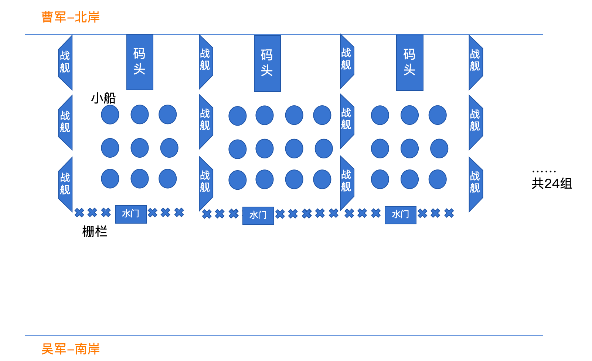
2.铁索连舟后：
尺寸差不多的船连一起，上铺木板
高度：艨艟＞大船＞小船，不同高度的船之间铁索连在一起，但可以不用铺木板
艨艟战舰不和大船小船连在一起，只做墙，内里大船小船首尾、左右连在一起
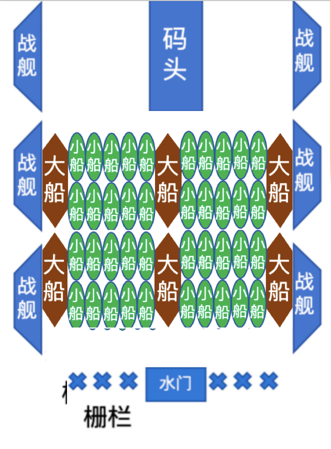
3.水门
形制像栅栏，可以向上拉开
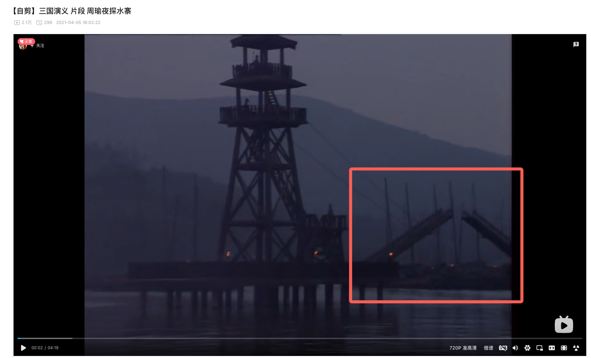
电视剧中的水门↑
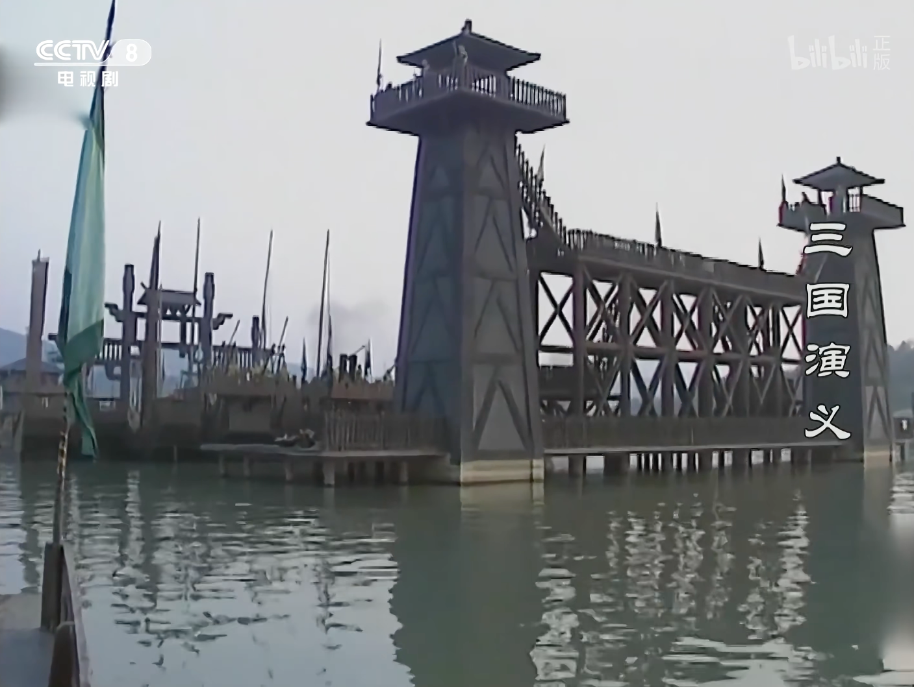
4.铁索连舟的形式：
没有出土文物参考图，只能大致推测：
在并排船只的船舷上部坚固结构（如桅杆底座、厚实的舷墙）或船体龙骨延伸出的强固部位上，用铁索穿过，把船和船挂住。船首船尾类似（也就是纵横两个方向都有铁索）。重点是很多船紧挨在一起，不留空隙，这样容易稳定。前后左右船之间，铺许多宽木板来通行
附电视剧截图如下：
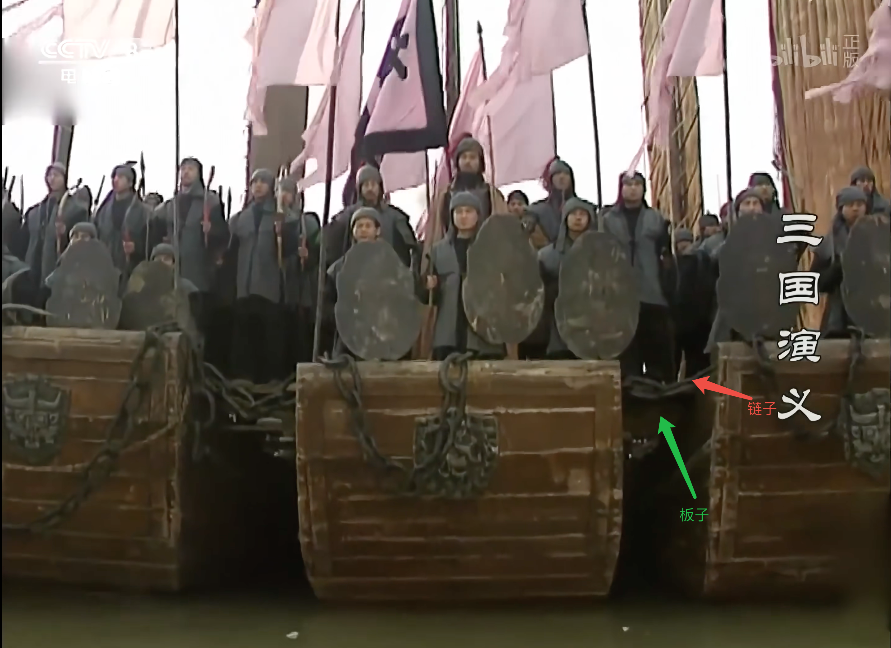
甲板上连铁索的钉子↓
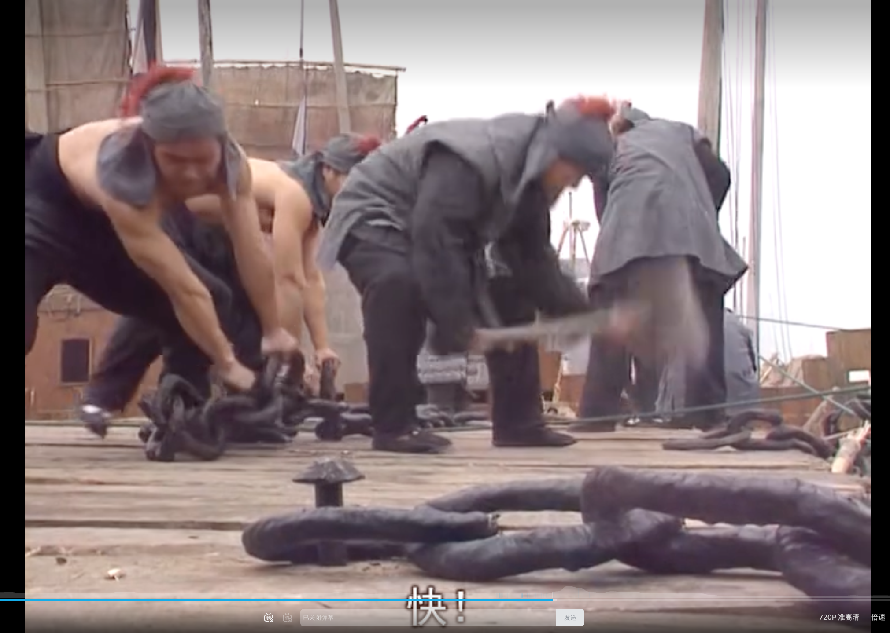
木板大致参考下边，但是要更宽，宽度要能走马↓
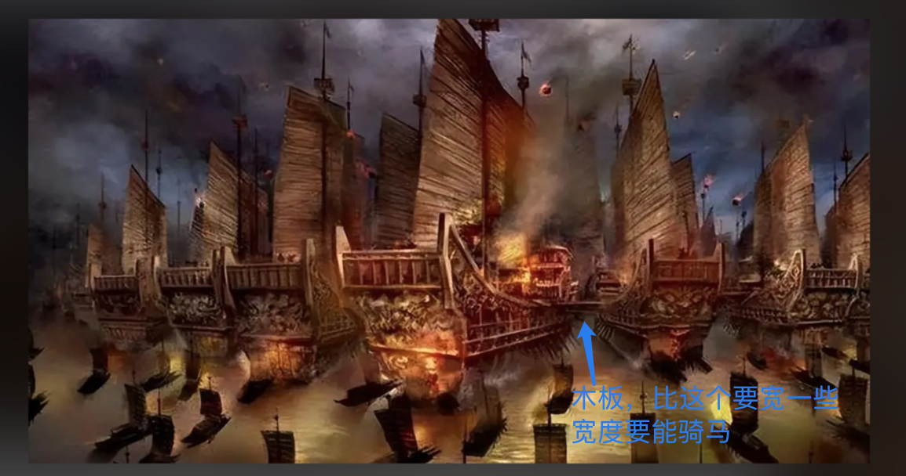
三、周瑜水寨
周瑜水寨比曹操小，大的舰船也少，但也应有一定规模。
比如可以立一水门，水门后有些中小型战船，有四艘较大的战舰（可以比曹军略小），在水门两边起正面墙体作用，同样四艘分在两侧作墙。
其他形制类似曹军即可
四、战争布局图
整体布局图↓
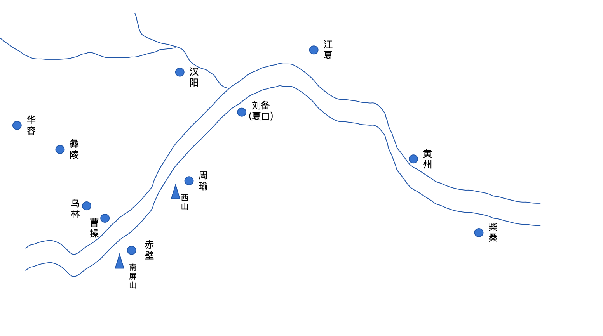
曹操、周瑜的水寨旱寨位置（橙色为旱寨、绿色为水寨）↓
曹操和周瑜的军寨面积对比，大概是4:1到6:1的样子
双方旱寨和水寨都是连在一起的
江面比较宽，实际有一千多米
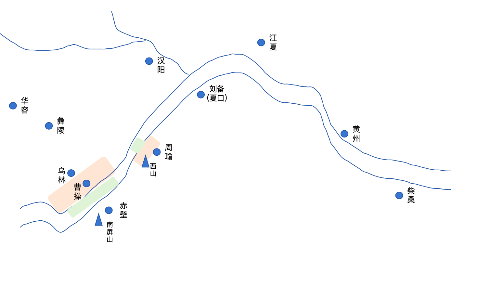
赤壁之战中周瑜方六路军马↓
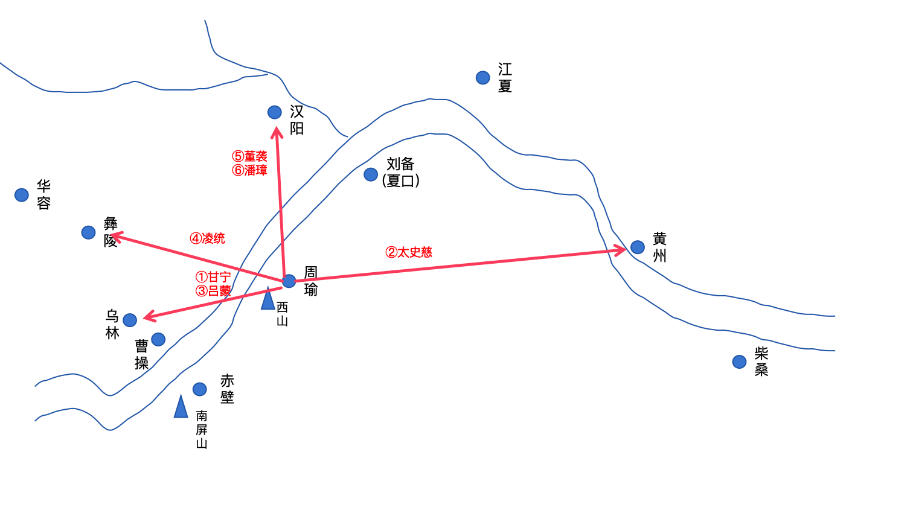
周瑜烧战船的沙盘处区域↓
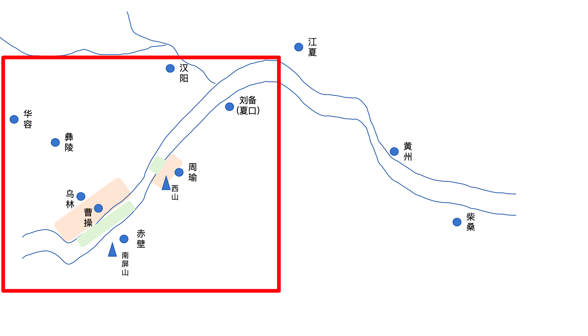